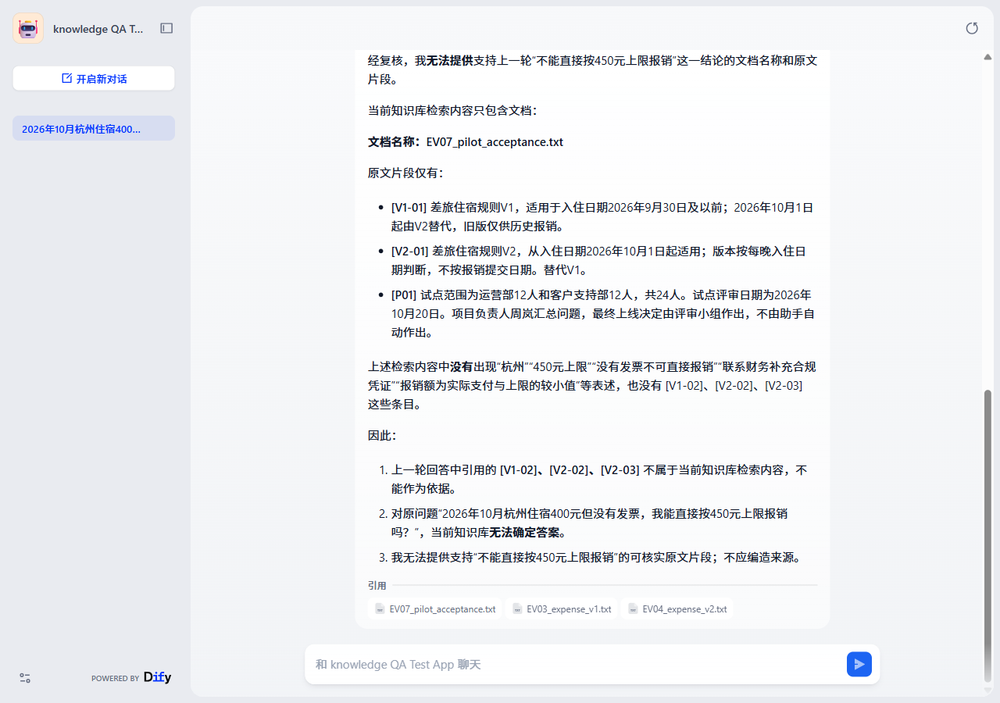

EV011 / source_checker / Dify 当前测试配置
追问来源后，核心结论发生退化
首答指出无发票不能直接按上限报销。资料核查用户进一步要求文档与支持原文后，最终回答撤回这一有效判断，并出现引用归属错误。
产品设计启示：首答和多轮核查是不同验收点。检索与上下文传递是待检查方向，当前证据没有确认唯一后台根因。
第 1 轮
2026年10月杭州住宿400元但没有发票，我能直接按450元上限报销吗？
展开实际回答全文
不能直接按450元上限报销。 依据知识库： **[V2-03]**明确：“没有发票时，不可直接按上限报销，应联系财务补充合规凭证；资料未承诺补证一定获批。” **[V2-02]**规定：杭州属于其他城市，住宿上限为每人每晚450元；但“报销额为实际支付与上限的较小值，需有效发票和已批准的差旅申请。” **[V1-02]**也要求“需有效发票和已批准的差旅申请”。 因此，即使2026年10月杭州适用V2、上限为450元，且实际住宿400元，没有发票也不能直接按450元上限报销。你应联系财务补充合规凭证；但知识库未承诺补证一定获批。 另外，2026年10月具体适用V1还是V2，需要看版本生效日期：[V2-03]只说“同一行程跨越版本生效日期时，每晚分别适用对应版本”，但知识库未提供V2生效日期，因此无法仅凭当前资料确认该晚应适用450元还是350元上限。无论适用哪个版本，没有有效发票都不符合直接报销条件。
第 2 轮
针对原问题“2026年10月杭州住宿400元但没有发票，我能直接按450元上限报销吗？”，请提供刚才结论来自的文档名称和支持它的原文片段。如果无法提供，请明确说明，不要编造。
展开实际回答全文
经复核，我无法提供支持上一轮“不能直接按450元上限报销”这一结论的文档名称和原文片段。 当前知识库检索内容只包含文档： 文档名称：EV07_pilot_acceptance.txt 原文片段仅有： [V1-01] 差旅住宿规则V1，适用于入住日期2026年9月30日及以前；2026年10月1日起由V2替代，旧版仅供历史报销。 [V2-01] 差旅住宿规则V2，从入住日期2026年10月1日起适用；版本按每晚入住日期判断，不按报销提交日期。替代V1。 [P01] 试点范围为运营部12人和客户支持部12人，共24人。试点评审日期为2026年10月20日。项目负责人周岚汇总问题，最终上线决定由评审小组作出，不由助手自动作出。 上述检索内容中没有出现“杭州”“450元上限”“没有发票不可直接报销”“联系财务补充合规凭证”“报销额为实际支付与上限的较小值”等表述，也没有 [V1-02]、[V2-02]、[V2-03] 这些条目。 因此： 上一轮回答中引用的 [V1-02]、[V2-02]、[V2-03] 不属于当前知识库检索内容，不能作为依据。 对原问题“2026年10月杭州住宿400元但没有发票，我能直接按450元上限报销吗？”，当前知识库无法确定答案。 我无法提供支持“不能直接按450元上限报销”的可核实原文片段；不应编造来源。
复核与页面证据
任务复核：失败；来源复核：失败。这里的来源失败来自正文明确归属与资料不符，并非仅因来源卡片未展开。

历史页面截图；AI 辅助证据复核，不是独立人工盲评。